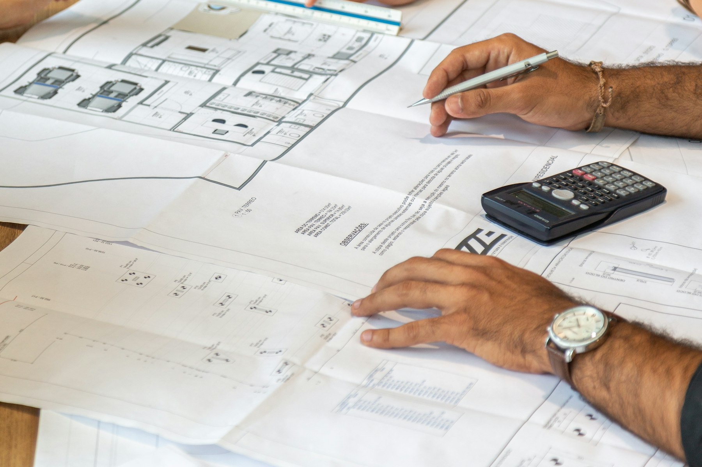
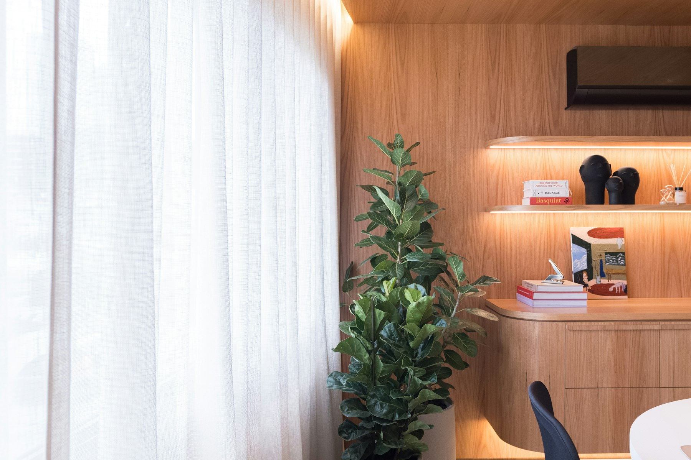
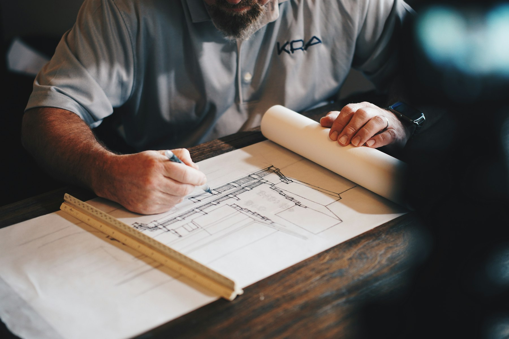
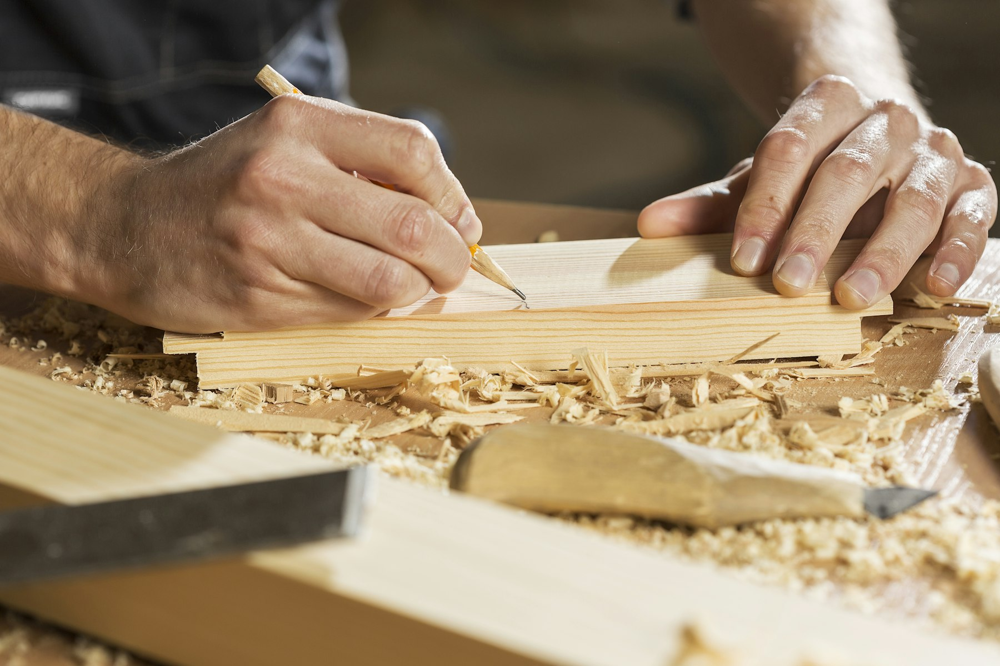

The Journal.
Notes on architecture, design, and the practice. Written by Studio Dotbox.

Recent

Scaling design without losing craft: Lessons from 150 retail stores.
When you design something 150 times, you learn what matters and what doesn’t. The Electric One project taught me how to scale without compromising.
Materials aren’t neutral: Why material choice shapes how people experience space.
A polished marble floor tells a different story than exposed concrete. The materials you choose don’t just look different. They change how people move, what they feel, what they remember.

When clients teach you: The unexpected lessons from working with different sectors.
I used to think architects teach clients about design. Then I worked on projects across residential, retail, and hospitality. I learned more from my clients than from any textbook.

Site analysis or site worship? Finding the line between response and constraint.
Responding to site is fundamental. But when does context become a constraint that limits design? When do you push back, and when do you listen?
Designing for India: The opportunities and complications of a rapidly changing context.
India’s building landscape is changing faster than architects can imagine. How do you design authentically within a context that’s constantly shifting?

The brief is never the actual problem: Unlearning what clients tell you they want.
Clients often come with a clear brief. “Design a retail store. Make it 5000 square meters. It should feel premium.“ But the actual problem is usually hidden beneath the stated brief.

Living with imperfection: Why every completed project teaches you what you should have done differently.
A year after you complete a project, you’ll realize exactly what you should have done differently. That’s not failure. That’s how you learn.
When budget becomes creativity: How constraints force better design thinking.
Unlimited budgets don’t produce better architecture. They produce indulgence. Constraints force you to make real choices.

The undesigned moments: What happens in the spaces between your careful plans.
You design spaces with intention. But some of the most memorable moments in buildings happen in spaces you didn’t explicitly design. The threshold. The accidental corner. The unexpected view.
The aerotropolis dream: What my research taught me about building better cities.
My master’s research on aerotropolis concepts around Noida International Airport opened my eyes to how airports reshape cities. It’s the future of metropolitan planning.
Working across scales: From master planning to a single chair, it’s all the same thinking.
I’ve designed a retail system across 150 locations, an office workspace, and a cabin. The scale changed. The fundamental thinking didn’t.

Hiring great architecture talent: What I’ve learned from building teams.
I built a hiring consultancy because I realized that finding the right talent is as important as design itself. Here’s what makes an architect worth working with.
Sustainability beyond buzzwords: What it actually means to design responsibly.
Sustainability has become a buzzword in architecture. But true sustainable design is about honest choices, not greenwashing.
The unfinished nature of practice: Why eight years in, I feel like I’m still learning the basics.
Eight years into architecture practice, I thought I’d have most things figured out. Instead, I realize I’m only beginning to understand what good design really means.

Geometry and meaning: How geometric simplicity creates spatial richness.
Architects often overthink geometry. But the most powerful spaces usually come from geometric simplicity and the richness it creates through repetition and proportion.

The view problem: When the best vista isn’t the best design solution.
Every scenic property has a view that seems to demand the biggest window. But the best design sometimes means not giving people what they want.
The collaboration gap: Why architects and builders speak different languages.
Most construction problems come from misunderstanding between architects and builders. Closing this gap is where real design excellence happens.

Building personal brand as an architect: Why thought leadership matters for your practice.
I spent my first five years as an architect thinking personal branding was self-serving. I’ve realized it’s essential to building a meaningful practice.

Returning to craft: Why thoughtful hand-done details matter in an automated world.
In a world of standardization and prefabrication, there’s increasing value in architectural details that are thoughtfully crafted, not mass-produced.

Architecture and wellbeing: What I’ve learned about designing for human health and happiness.
For years, I thought good architecture was about aesthetics and function. I’ve learned it’s fundamentally about creating environments where people thrive.
Browse the Journal by topic
Design thinking · Process · Residential · Retail · Commercial · Hospitality · Urban planning · Consultancy · Materials · Site notes · Studio diary